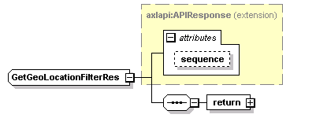
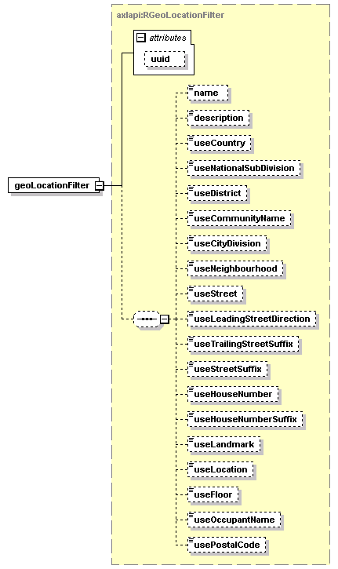

| diagram |  | ||||||||||||
| namespace | http://www.cisco.com/AXL/API/10.5 | ||||||||||||
| type | extension of axlapi:APIResponse | ||||||||||||
| properties |
|
||||||||||||
| children | return | ||||||||||||
| used by |
|
||||||||||||
| attributes |
|
||||||||||||
| source | <xsd:complexType name="GetGeoLocationFilterRes"> <xsd:complexContent> <xsd:extension base="axlapi:APIResponse"> <xsd:sequence> <xsd:element name="return"> <xsd:complexType> <xsd:sequence> <xsd:element name="geoLocationFilter" type="axlapi:RGeoLocationFilter"/> </xsd:sequence> </xsd:complexType> </xsd:element> </xsd:sequence> </xsd:extension> </xsd:complexContent> </xsd:complexType> |
| diagram | |||
| properties |
|
||
| children | geoLocationFilter | ||
| source | <xsd:element name="return"> <xsd:complexType> <xsd:sequence> <xsd:element name="geoLocationFilter" type="axlapi:RGeoLocationFilter"/> </xsd:sequence> </xsd:complexType> </xsd:element> |
| diagram |  | ||||||||||||
| type | axlapi:RGeoLocationFilter | ||||||||||||
| properties |
|
||||||||||||
| children | name description useCountry useNationalSubDivision useDistrict useCommunityName useCityDivision useNeighbourhood useStreet useLeadingStreetDirection useTrailingStreetSuffix useStreetSuffix useHouseNumber useHouseNumberSuffix useLandmark useLocation useFloor useOccupantName usePostalCode | ||||||||||||
| attributes |
|
||||||||||||
| source | <xsd:element name="geoLocationFilter" type="axlapi:RGeoLocationFilter"/> |